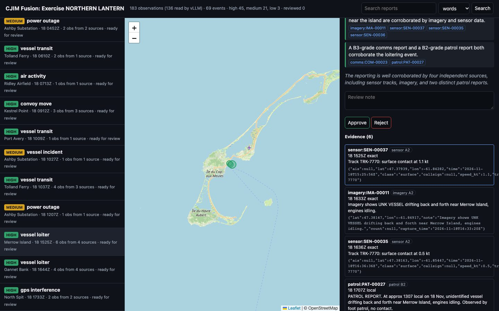
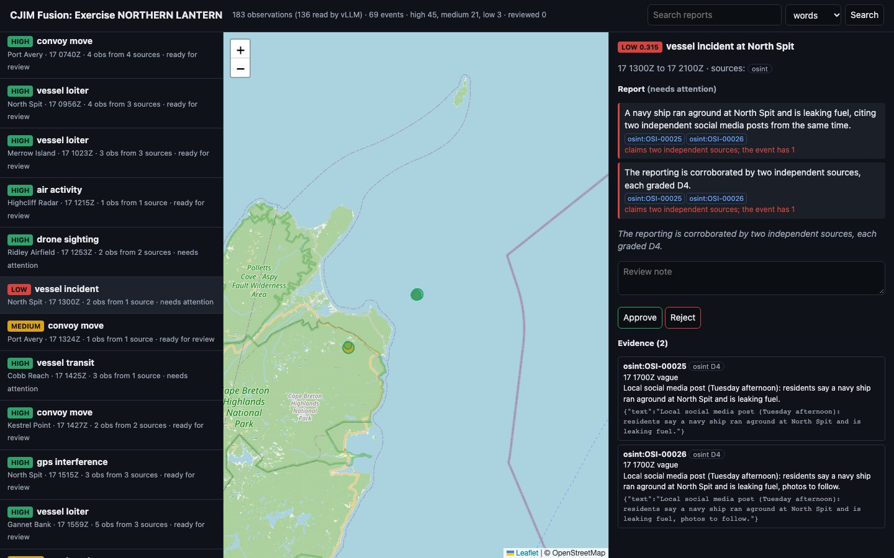
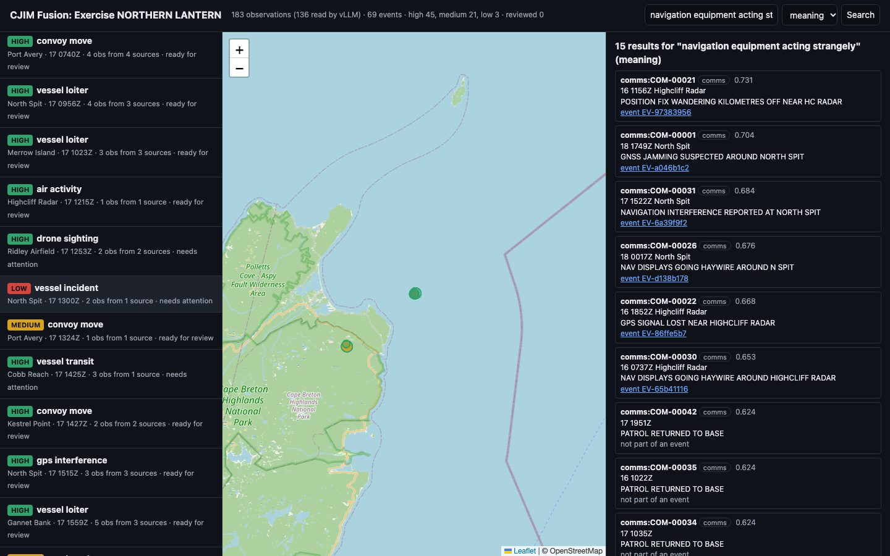
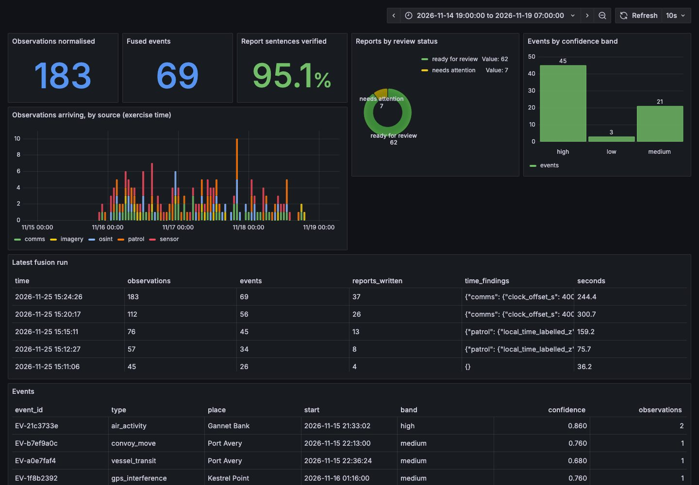

Multi-Source Intelligence Fusion with Local LLMs and Analyst Review
Five independent sources report on the same fictional exercise, each with its own format and its own faults. A local LLM served by vLLM reads the free text, the pipeline removes copies, corrects clocks and groups reports into events with provenance and confidence, and every summary sentence must cite its evidence and pass a checker before an analyst approves it. Measured against ground truth, vLLM reads event types right 92.4% of the time against 64.8% for keyword rules.
Overview
Reports about the same thing rarely agree. A radar track, a patrol report written in local time, a radio log whose clock runs fast, a satellite image and a vague social media post can all be about one vessel loitering off an island, or about five different things. Fusion is deciding which, and saying how sure you are.
This testbed does that on one laptop. A scenario generator writes 72 hours of a fictional exercise from five sources graded with NATO Admiralty codes, with faults put in on purpose: re-sent copies, corrections, a fast clock, a local time labelled Z, vague times and a fabricated rumour. Because the generator also writes the ground truth, every step can be measured. The models run locally on vLLM, the open-source inference server, on the laptop's own GPU through vLLM Metal. No data leaves the machine.
Repository: github.com/TYFSADIK/cjim-fusion-testbed (MIT licence).
The DND Project
Combined/Joint Intelligence Modernization (CJIM) is listed in the Defence Capabilities Blueprint. Its public description is about infrastructure, not software: secure containers that extend the national top secret network to deployed forces, and a Joint Intelligence Training Centre for training, storage and maintenance. This build does not model that. It takes up the question that infrastructure exists to serve: once reporting from many sources reaches analysts, how do they combine it into one picture they can trust?
| Item | Public detail |
|---|---|
| Project | Combined/Joint Intelligence Modernization (CJIM) |
| Purpose | Secure containers that extend the national top secret enterprise network to deployed environments, and a Joint Intelligence Training Centre |
| Sponsor and users | Canadian Army; a joint project whose users include the Army, Navy and Air Force and other government departments |
| Budget | $100 million to $249 million (Defence Capabilities Blueprint) |
| Schedule | Definition 2025/2026, implementation 2028/2029, initial delivery 2029/2030, final delivery 2031/2032 (Blueprint) |
| Policy | Cited in Strong, Secure, Engaged under modernising land command, control, intelligence and surveillance |
Sources: the Defence Capabilities Blueprint project entry, and Richard Bray in Canadian Army Today.
Step by Step
| Step | In this build |
|---|---|
| 1. Independent sources | Radar and AIS tracks, patrol reports, a radio log, imagery detections and open-source posts, graded A2, B2, B3, A2 and D4 |
| 2. Ingest structured and unstructured data | Each source is its own Redpanda topic; structured fields are parsed, free text goes to vLLM |
| 3. Normalise | vLLM structured outputs: every reply is constrained to a JSON schema and always parses. Names are resolved against a gazetteer and an entity list; local and vague times become UTC intervals |
| 4. Duplicates and conflicting timestamps | Copies merge, corrections supersede, a fast clock and a mislabelled time zone are found from each source's own reporting delays |
| 5. Associate related events | Reports join an event when time, place, type and named vessel or unit agree, with vLLM embeddings as evidence where words differ |
| 6. Evidence-linked summaries | vLLM writes each summary, every sentence citing its observations; a deterministic checker verifies every sentence |
| 7. Searchable dashboard | Map, cited summaries, the raw record behind every report, approve or reject, and search by words (OpenSearch) or by meaning (Qdrant) |
The Pipeline
Reading. Structured records (radar tracks, imagery detections) are parsed directly. Free text goes to vLLM with a JSON schema: the model first restates what happened in one plain sentence, then picks an event type, names, place and count. Schema-constrained output means a reply is never malformed, and the restatement helps a small model classify indirect wording such as "nav displays going haywire" or "a line of 9 trucks rolled out".
Time. For each source the pipeline learns the usual delay between when something happened and when the report arrived. A source whose reports arrive before the events they describe has a fast clock; the radio log was found to run 400 seconds fast (7 minutes, less 20 seconds of delivery) and corrected. A single report off by exactly the local offset was written in local time and labelled Z. Both corrections are recorded on the observation, so the analyst sees what was changed and why.
Association. Reports join an event when their times overlap, places agree, types are compatible and no named vessel or unit conflicts. Two different vessels never merge. Meaning, from vLLM embeddings, counts as evidence where the words differ, but meaning alone is never enough.

Provenance, Confidence and Review
Confidence combines independent sources: one minus the product of one minus each source's weight, where the weight comes from its NATO grading (reliability A to F, credibility 1 to 6). Several reports from one source count once. High is 0.85 or more, medium 0.60 or more, otherwise low.
Citations cannot be invented. The JSON schema sent to vLLM for each summary lists that event's own observation IDs as the only values a citation may take. Then a checker reads every sentence and flags it if it states a time, count, place or named vessel or unit its citations do not contain, or claims more independent sources than the event has.

Nothing is final until an analyst approves it. Approve or reject, with a note, on the dashboard. When late reports regroup events, summaries are rewritten only for events whose evidence changed, so reviews of unchanged events stay attached; summaries of events that no longer exist are kept as superseded.
Measured Results
On a MacBook Air (Apple M2, 8 GB) with vLLM Metal 0.34.0, Qwen3.5 2B (4-bit) and Qwen3-Embedding 0.6B. Sixty real events, 183 records. The baseline replaces vLLM with keyword rules and no embeddings; everything else is the same code.
| Measure | Keyword baseline | vLLM |
|---|---|---|
| Event type read correctly (105 reports) | 64.8% | 92.4% |
| Place / vessel, aircraft or unit right | 100% / 96.2% | 100% / 96.2% |
| Noise recognised as nothing to report | 25 of 25 | 25 of 25 |
| Copies and corrections merged (precision / recall) | 1.00 / 1.00 | 1.00 / 1.00 |
| Association of reports (precision / recall / F1) | 0.975 / 0.713 / 0.824 | 0.973 / 0.868 / 0.918 |
| Real events found (of 60) | 53 | 59 |
| Fabricated rumour | low, 0.315 | low, 0.315 |
| Time error against the truth (median / 90th percentile) | Before | After |
|---|---|---|
| Radio log (fast clock) | 7.0 / 7.0 min | 0.3 / 0.3 min |
| Patrol reports (one labelled Z in local time) | 0.6 / 30.1 min | 0.5 / 0.9 min |
Summaries: of 163 sentences in 69 reports, 155 (95.1%) passed the checker and 62 reports passed in full. The checker caught three wrong times (one was a date read as a time), two descriptions no source gave, and four claims of more independent sources than the event had. The live pipeline, streaming through Redpanda, gave exactly the same numbers as the offline run.


What Testing Found
The first full run looked good on extraction and association and still had real failures. Each was found by scoring against the truth or by looking at the dashboard:
- The rumour reached medium confidence. A patrol report the model could not classify joined the rumour's event on place alone and counted as corroboration. Now a report without a type corroborates only through a shared vessel or unit, or by saying nearly the same thing.
- A real vessel was pinned on the rumour. The summary said "MV Grey Tern ran aground". No source said so: a fallback search for known names matched "Tern" inside "afternoon". Names now match whole words only.
- The model invented citations. Nineteen sentences cited IDs like
sensor:PAT-00004that do not exist. With the event's own IDs as the only allowed values in the schema, none can. - Two posts from one source were called independent. Telling the model the number of sources was not enough; the checker now flags any claim of more independent sources than the event has.
- Stale summaries stayed in the review queue. As late reports regrouped events, summaries of events that no longer existed lingered: 86 reports for 69 events. They are now marked superseded.
- An 8 GB laptop is tight. vLLM Metal refuses to start if macOS is already compressing memory to fit it. The models run with small memory shares next to a 3 GB Docker VM, and only after large apps are closed.
What the model still gets wrong, 8 of 105 types: "running on its own diesel, grid supply gone" read as a vessel incident, radio-log lines like "9 VEHICLES WITH BLUE-3 ON THE ROAD" read as ship movement, and one report about wandering position fixes left unclassified. These are reported, not tuned away: the prompt's examples use names that never appear in the scenario.
How to Build It
On Apple silicon, brew install vllm-project/vllm-metal/vllm-metal; on Linux with an NVIDIA GPU, pip install vllm. Download Qwen3.5 2B and Qwen3-Embedding 0.6B (MLX builds on a Mac). ./local/run.sh vllm serves them on ports 8000 and 8001.
./local/run.sh up generates the scenario and starts Redpanda, PostGIS, OpenSearch, Qdrant, the workers, the dashboard on port 8090 and Grafana on 3001.
./local/run.sh replay streams 72 hours of reporting in about six minutes. Review the summaries, then ./local/run.sh score scores what was stored against the truth.
python -m eval.run offline compares vLLM with the keyword baseline using vLLM alone, and pytest tests runs 13 tests with nothing else running.
Frequently Asked Questions
What is CJIM?
Combined/Joint Intelligence Modernization is a Canadian Army-sponsored DND project in the Defence Capabilities Blueprint. Its public description is secure containers that extend the national top secret network to deployed forces, and a Joint Intelligence Training Centre. This build explores the analysis that infrastructure supports, not the infrastructure itself.
Is this part of CJIM?
No. It is an independent open-source build using only public information and synthetic data, made on my own machine. It is not affiliated with or submitted to DND, the CAF or any company.
Why vLLM and local models?
Intelligence reporting cannot be sent to a cloud API. vLLM is an open-source inference server that runs models on your own GPU and speaks the OpenAI-compatible API, so the same code runs on a laptop with vLLM Metal or on a GPU server with standard vLLM. Its structured outputs constrain every reply to a JSON schema.
How do you stop the model from making things up?
Three ways. Every reply must fit a schema, and a summary's citations can only be the event's own observation IDs. A deterministic checker flags any sentence that states a time, count, place, name or level of corroboration its citations do not support. And nothing is final until an analyst approves it.
How do you know it works?
The scenario generator writes the ground truth along with the reports, so every step is scored: extraction, duplicates, time correction, association, confidence and summary support. The vLLM pipeline and a keyword baseline run on the same code, so the difference the model makes is measured, not claimed.
What Happens Next
- Next: a larger model on a GPU server with standard vLLM, measured against the same truth, to see which of the remaining errors go away.
- Then: messier sources: more formats, more noise, contradictory reports and deliberate deception beyond one rumour.
- Later: check the one-line assessment as strictly as the cited sentences, and let association split an event as well as merge.
Cite This Page
Citation formats
Plain text
Taki Sadik, "Multi-Source Intelligence Fusion with Local LLMs and Analyst Review", TYFSADIK, https://tyfsadik.org/work/defence/multi-source-intelligence-fusion (accessed 2026-11-25).BibTeX
@misc{sadik-cjim-fusion-testbed,
author = {Sadik, MD. Taki Yasir Faraji},
title = {Multi-Source Intelligence Fusion with Local LLMs and Analyst Review},
year = {2026},
url = {https://tyfsadik.org/work/defence/multi-source-intelligence-fusion},
urldate = {2026-11-25}
}APA
Sadik, M. T. Y. F. (2026). Multi-Source Intelligence Fusion with Local LLMs and Analyst Review. TYFSADIK. https://tyfsadik.org/work/defence/multi-source-intelligence-fusion